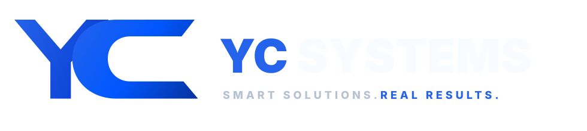

CRM, operaciones, reservas, documentos, reportes, usuarios, roles, pagos y flujos administrativos.
YC Systems / Empresas
Oferta empresarial
Soluciones digitales para empresas que necesitan operar mejor
YC Systems para empresas está pensado para clientes grandes, socios e inversionistas que buscan sistemas internos, Producto SaaS, mantenimiento y transformación digital con una ruta clara.

Qué puede contratar una empresa
Cuatro líneas comerciales para crecer con orden
Cada línea puede comenzar como primera versión y evolucionar con mantenimiento mensual, nuevas funciones e integraciones.
Producto inicial para validar una idea con clientes reales: panel admin, API, usuarios, suscripciones e integraciones.
Mejoras mensuales, ajustes de contenido, nuevas pantallas, soporte, monitoreo básico y evolución del producto.
Modernización de procesos manuales con dashboards, formularios, automatizaciones y herramientas web.
Portafolio de productos
YC Systems se construye como una empresa de sistemas digitales con verticales internas protegidas
El valor no está solo en crear páginas. Está en convertir problemas repetidos de negocio en plataformas que pueden venderse, mantenerse y mejorar por fases.
Operaciones comerciales, dashboards, reservas, seguimiento y visibilidad ejecutiva.
CRM inmobiliario para prospectos, clientes, documentos, pagos, reservas y comisiones.
SaaS vertical para lavanderías con roles, apps, pagos, mapas y flujo operativo.
Tienda real de cliente con dominio activo, catálogo, carrito y pedido por WhatsApp.
PWA bilingüe de servicios locales con cotización, reservas, chat y experiencia móvil.
Roadmap financiero con clientes, casos, documentos, cartas, portal y compliance.
Forma de trabajo
Diagnóstico, alcance, entrega y mejora continua
YC Systems puede revisar el problema, proponer una ruta inicial, construir la primera versión, publicar o entregar el sistema y mantenerlo como activo digital del negocio.
Propuesta inicial
Roadmap por fases
Documentación y entrega técnica
Mantenimiento disponible
ES / EN disponible
Listo para analítica
Preparación empresarial
Camino hacia una estructura más formal
YC Systems se está preparando para operar con mejor presencia comercial: identidad consistente, productos reales, documentos base, canales oficiales, procesos de mantenimiento y una futura estructura legal como LLC cuando corresponda.
Portafolio actualizado
Sitios y capturas reales
Líneas internas de software
Casos de cliente
Documentos comerciales
Instagram y Facebook oficiales